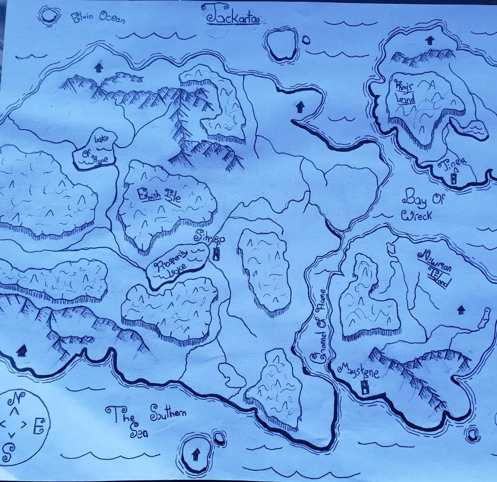
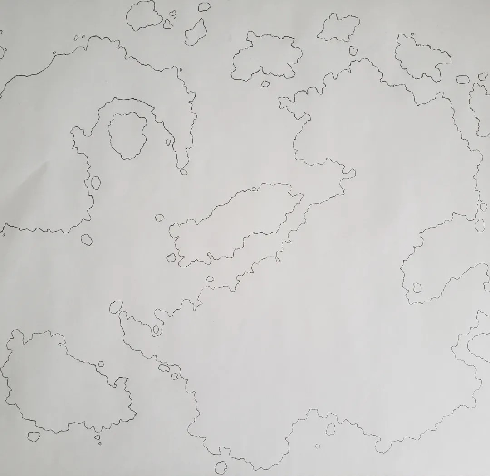
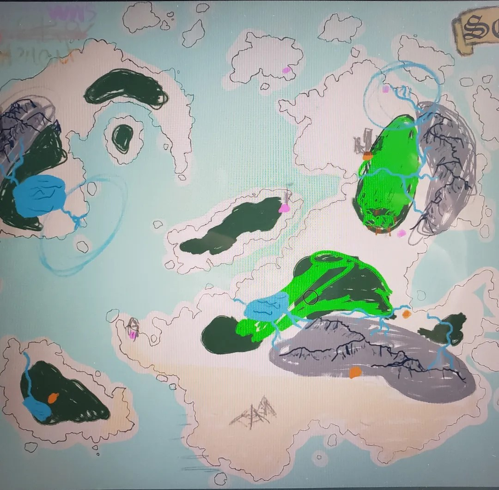
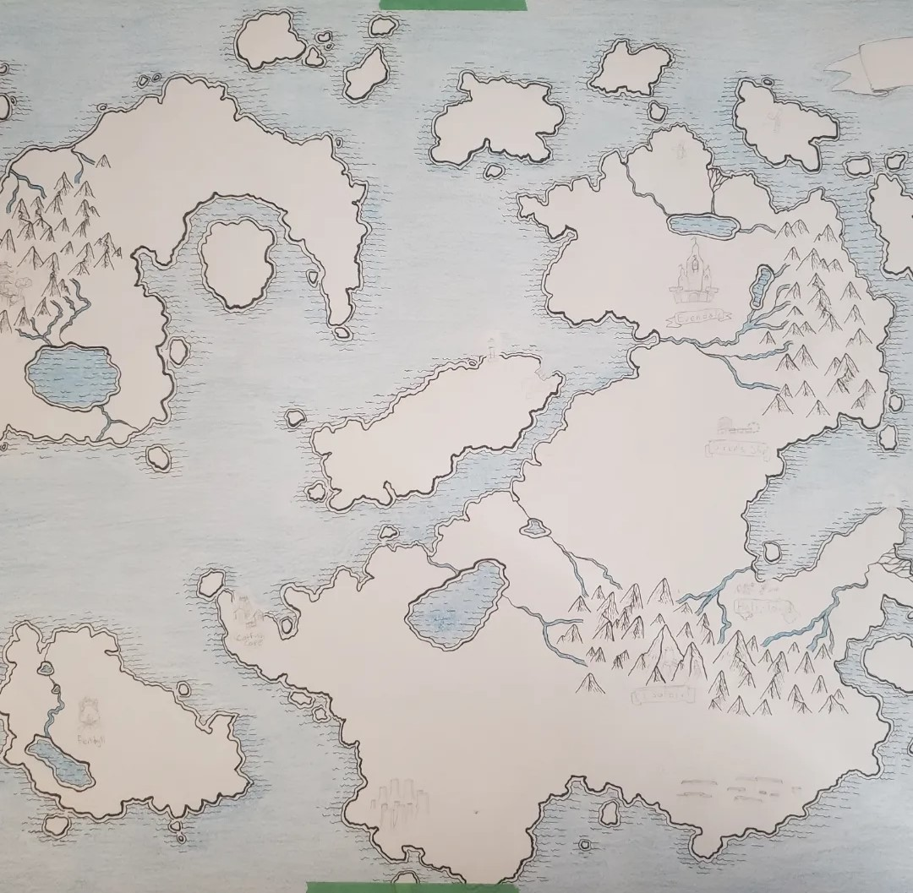
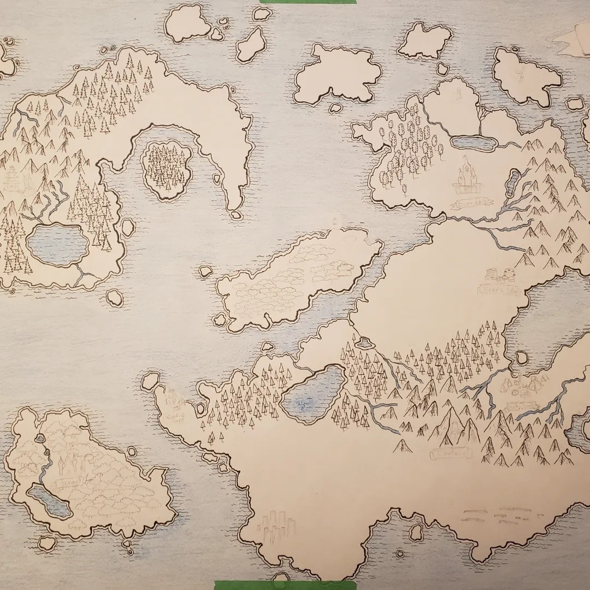
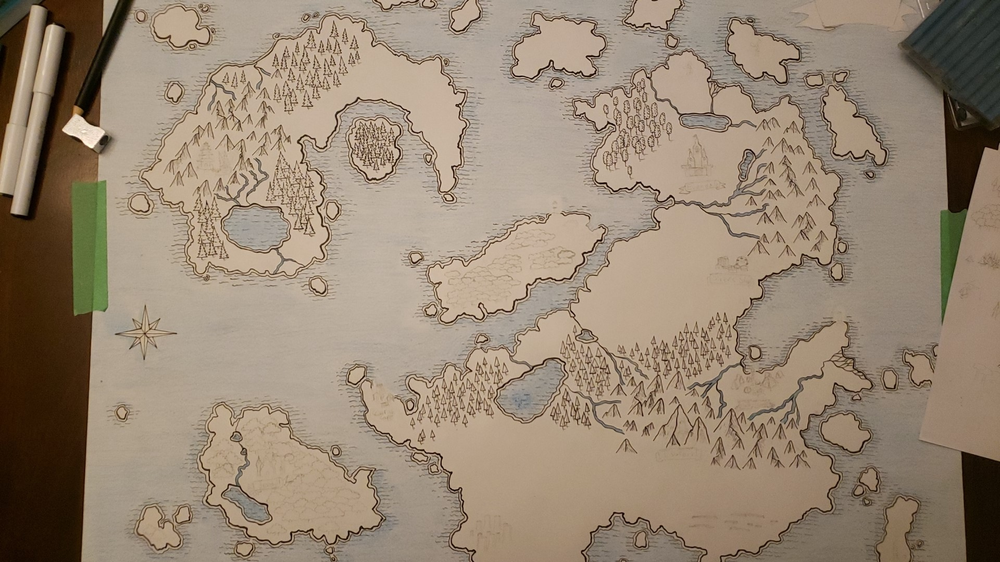
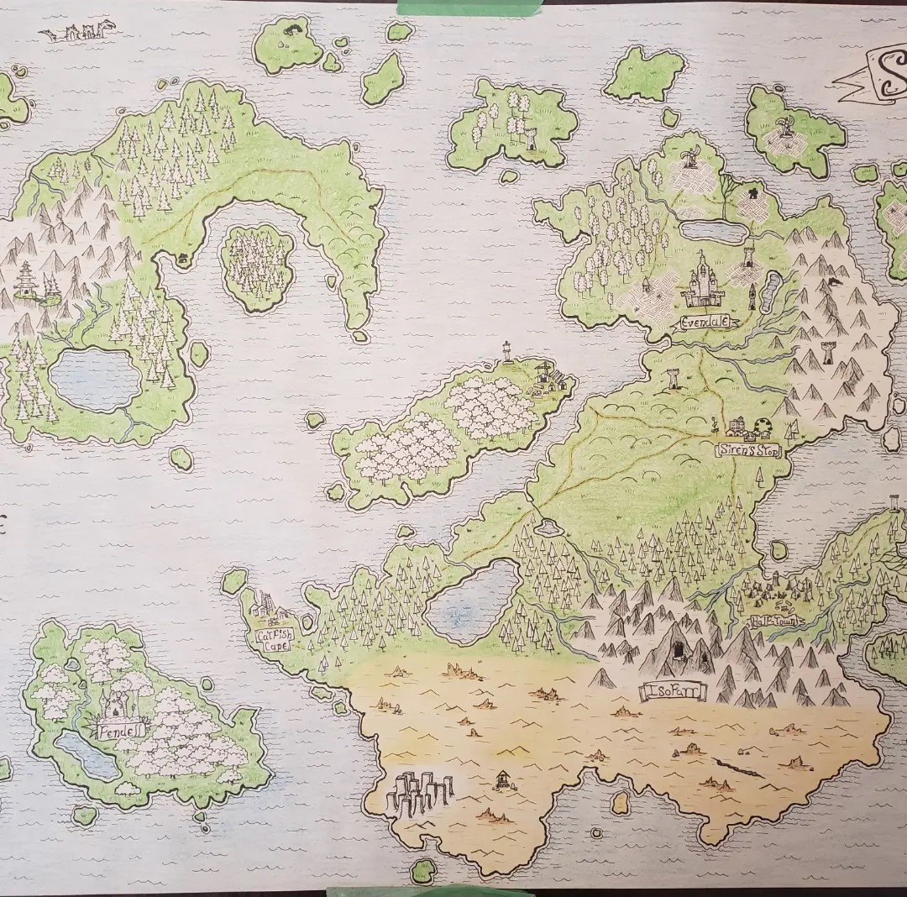

Project Summary
This project features two fantasy maps illustrated by myself. Sol, the larger and more detailed of the two contains lots of small details and is fun to explore. A comprehensive series of progress photos is in the "Images" section below.
Jakarta was the first attempt and experiment with creating a fantasy map.
My starting point for this project was WASD20 on Youtube, who has a series all about creating fantasy maps meant to convey narritive. Click here to view WASD20's fantasy map creation playlist on Youtube.
Map of Sol
Click to view the map fullscreen in a new tab.
Images
Click on any image to view it fullscreen in a new tab.

Early map "Jakarta". My first try at a fantasy map

Outline of Sol. Rice Crispies were used to create the landformed traced here.

Digital rough draft of geography. Orange and pink dots are points of interest.

Water and coastline (1)

Trees, Mountains, and POI Sketches (condensed)

Trees, Mountains, and POI Sketches (full)

POI's and colour